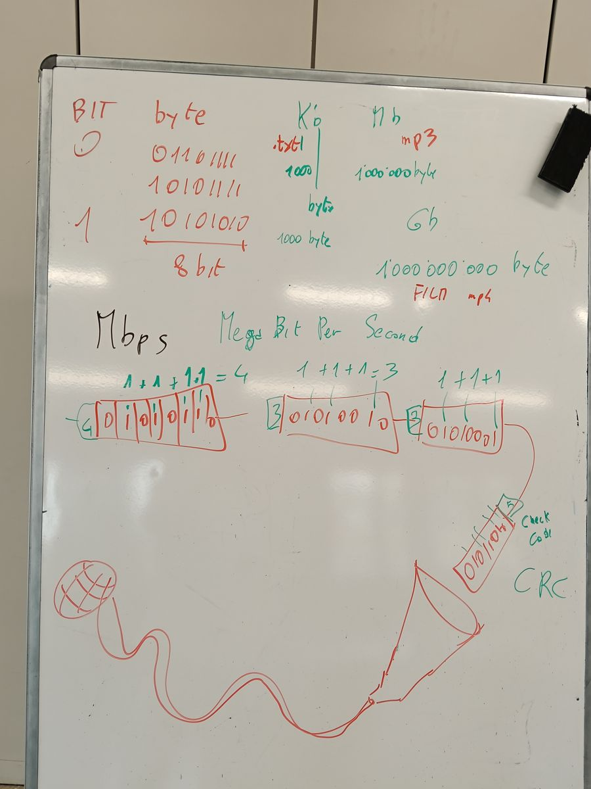
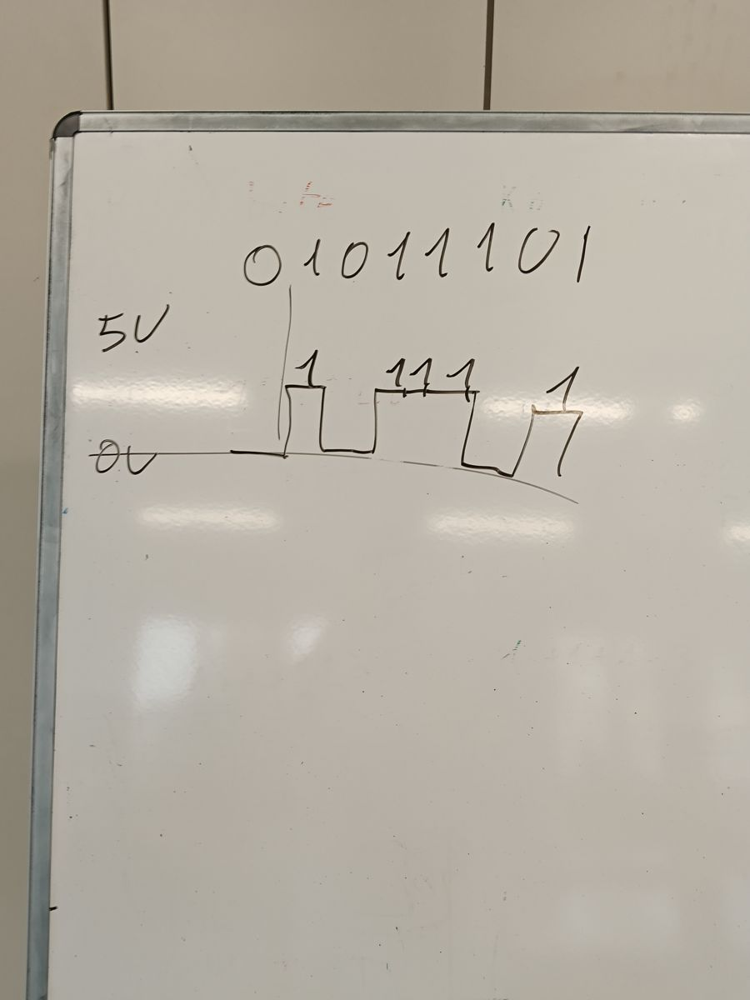
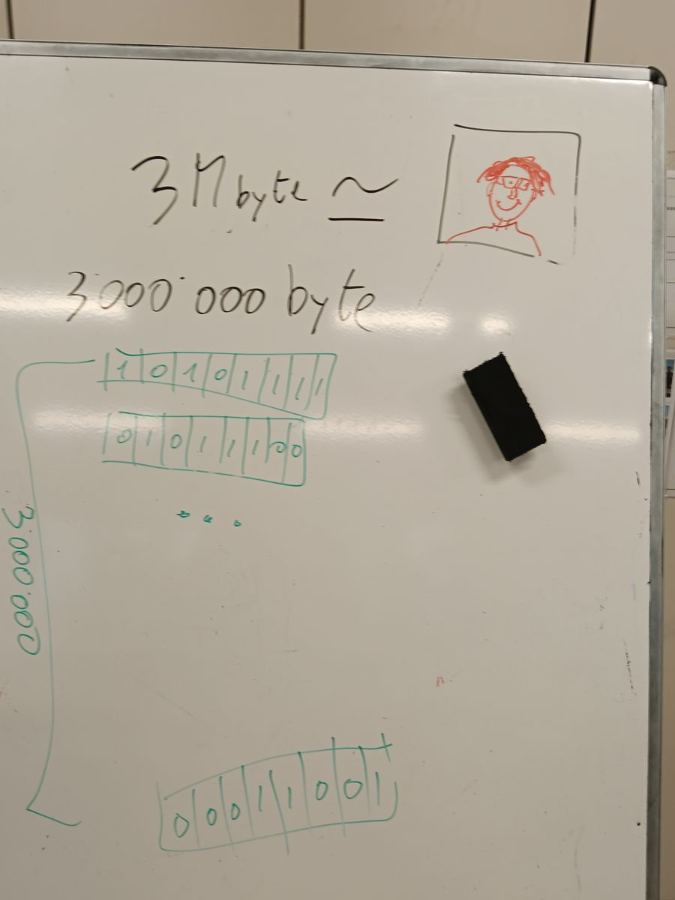
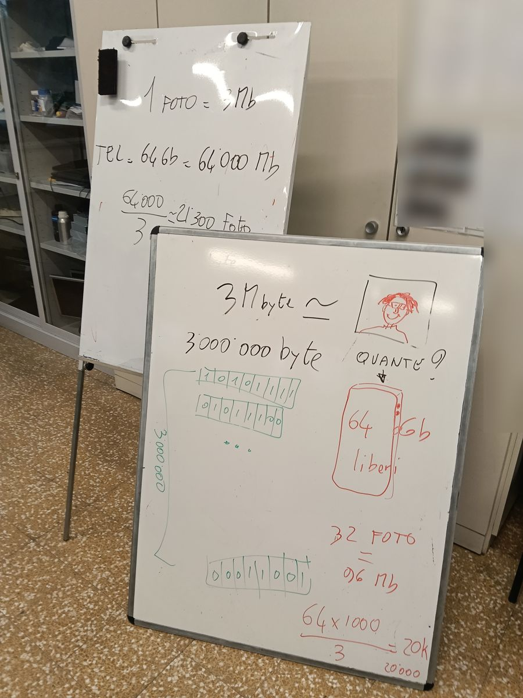
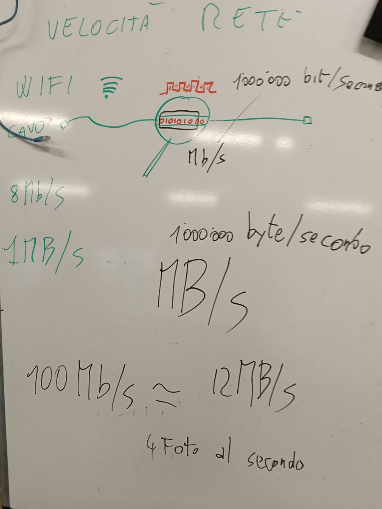

Quanto pesa un file?
Quanto va veloce la rete?
Bit, byte, KB, MB, GB · Mbps · streaming · Wi-Fi e cavi
ping, lag, FPS, Hz · monitor · schede video · cavi VGA e HDMI
كم يزن الملف؟ كم سرعة الشبكة؟
文件有多大？网速有多快？
Classe 1 · 20 e 21/10/2026 · v1.3
1. Il bit: 0 oppure 1١. البِت: صفر أو واحد1. 比特：0 或 1
Il computer capisce solo due cose: corrente sì o corrente no, come una lampadina accesa o spenta. Le scriviamo 1 e 0.
Un solo 0 o 1 si chiama bit. È il pezzo più piccolo di informazione. Lo avete già visto con il binario: 1010 sono 4 bit.الحاسوب يفهم شيئين فقط: 1 أو 0، مثل مصباح مضاء أو مطفأ. الرقم الواحد اسمه «بِت».电脑只懂两种状态：1 或 0，就像灯开或关。一个 0 或 1 叫做“比特”（bit）。
Bit, byte, rete e gamer · 1 / 21
2. Il byte: 8 bit insieme٢. البايت: ٨ بِت معًا2. 字节：8 个比特
Un bit da solo dice poco. 8 bit insieme fanno un byte. Con un byte il computer scrive una lettera: la A è 01000001.
Quindi: 1 byte = 8 bit = una lettera.
Il bit si scrive con la b piccola, il byte con la B grande. Ricordatelo: serve dopo, per la velocità.٨ بِت = ١ بايت = حرف واحد. البِت يُكتب b صغيرة، والبايت B كبيرة.8 个比特 = 1 个字节 = 一个字母。比特写小写 b，字节写大写 B。
Bit, byte, rete e gamer · 2 / 21
3. Le unità: KB, MB, GB, TB٣. الوحدات: KB، MB، GB، TB3. 单位：KB、MB、GB、TB
I file sono fatti di tantissimi byte. Per non scrivere numeri lunghi usiamo i
multipli, ogni gradino è
circa 1000 volte più grande:
| Nome | Si scrive | Quanto è |
|---|
| kilobyte | KB | 1000 byte |
| megabyte | MB | 1000 KB |
| gigabyte | GB | 1000 MB |
| terabyte | TB | 1000 GB |
Come i metri: 1000 metri = 1 chilometro. (Il computer, per essere precisi, usa 1024 invece di 1000: per i nostri conti va bene 1000.)
كل درجة أكبر بنحو ١٠٠٠ مرة: ١٠٠٠ بايت = KB، ١٠٠٠ KB = MB، ١٠٠٠ MB = GB.每一级大约大 1000 倍：1000 字节 = 1 KB，1000 KB = 1 MB，1000 MB = 1 GB。Bit, byte, rete e gamer · 3 / 21
4. Quanto pesa?٤. كم يزن؟4. 有多大？
Numeri tondi da ricordare:
| Che cosa | Quanto pesa (circa) |
|---|
| un messaggio di testo | 1 KB |
| una foto del telefono | 3 MB |
| una canzone | 4 MB |
| un video di 1 minuto | 100 MB |
| un film | 2 GB |
| la memoria di un telefono | 128 GB |
| il disco del PC che avete montato | 500 GB o 1 TB |
La
RAM si misura nello stesso modo: 8 GB, 16 GB.
صورة ≈ ٣ MB، أغنية ≈ ٤ MB، فيلم ≈ ٢ GB، ذاكرة الهاتف ≈ ١٢٨ GB.一张照片约 3 MB，一首歌约 4 MB，一部电影约 2 GB，手机存储约 128 GB。Bit, byte, rete e gamer · 4 / 21
5. Il conto: quante foto ci stanno?٥. الحساب: كم صورة تتسع؟5. 计算：能放多少张照片？
Il telefono ha 64 GB liberi. Quante foto da 3 MB ci stanno?
1) Porto tutto in MB: 64 GB = 64 × 1000 = 64000 MB.
2) Divido per il peso di una foto: 64000 : 3 = circa 21000 foto.
Regola: prima porto tutto nella stessa unità, poi divido.أولًا نحوّل كل شيء إلى نفس الوحدة، ثم نقسم: ٦٤ GB = ٦٤٠٠٠ MB، ٦٤٠٠٠ ÷ ٣ ≈ ٢١٠٠٠ صورة.先换成同一个单位，再做除法：64 GB = 64000 MB，64000 ÷ 3 ≈ 21000 张照片。
Bit, byte, rete e gamer · 5 / 21
6. La velocità della rete: bit al secondo٦. سرعة الشبكة: بِت في الثانية6. 网速：每秒多少比特
La velocità di Internet si misura in
bit al secondo. Si usa il
Mbps = megabit al secondo (milioni di bit ogni secondo).
| Connessione | Velocità (circa) |
|---|
| ADSL vecchia | 10 Mbps |
| 4G del telefono | 30 Mbps |
| 5G | 300 Mbps |
| fibra | 1000 Mbps = 1 Gbps |
Più Mbps = scarichi più in fretta, i video non si bloccano, il gioco online non va a scatti.
سرعة الإنترنت تُقاس بالبِت في الثانية: Mbps = ميغابِت في الثانية. الألياف ≈ ١٠٠٠ Mbps.网速用“每秒比特”来量：Mbps = 每秒兆比特。光纤约 1000 Mbps。Bit, byte, rete e gamer · 6 / 21
7. Attenzione: b piccola e B grande٧. انتبه: b صغيرة و B كبيرة7. 注意：小写 b 和大写 B
La rete si misura in Mb (megabit, b piccola). I file si misurano in MB (megabyte, B grande).
Siccome 1 byte = 8 bit, per passare dalla velocità della rete ai MB al secondo divido per 8:
100 Mbps : 8 = 12,5 MB al secondo.
Per questo, con una linea da 100 «mega», il download non va a 100 MB al secondo ma a circa 12.الشبكة بالميغابِت (b صغيرة) والملفات بالميغابايت (B كبيرة). نقسم على ٨: ١٠٠ Mbps ÷ ٨ = ١٢٫٥ MB في الثانية.网速用兆比特（小写 b），文件用兆字节（大写 B）。除以 8：100 Mbps ÷ 8 = 每秒 12.5 MB。
Bit, byte, rete e gamer · 7 / 21
8. Quanto ci metto a scaricare?٨. كم أحتاج من الوقت للتنزيل؟8. 下载需要多长时间？
Voglio scaricare un film da 2 GB con una linea da 100 Mbps.
1) Il film in MB: 2 GB = 2000 MB.
2) La velocità in MB al secondo: 100 : 8 = 12,5 MB/s.
3) Divido: 2000 : 12,5 = 160 secondi, meno di 3 minuti.
Con il 4G a 30 Mbps: 30 : 8 ≈ 4 MB/s → 2000 : 4 = 500 secondi, più di 8 minuti.فيلم ٢ GB = ٢٠٠٠ MB. سرعة ١٠٠ Mbps ÷ ٨ = ١٢٫٥ MB/ث. ٢٠٠٠ ÷ ١٢٫٥ = ١٦٠ ثانية.电影 2 GB = 2000 MB。100 Mbps ÷ 8 = 每秒 12.5 MB。2000 ÷ 12.5 = 160 秒。
Bit, byte, rete e gamer · 8 / 21
9. Lo streaming: quanta velocità serve?٩. البثّ المباشر: كم سرعة نحتاج؟9. 在线播放：需要多快的网速？
Streaming vuol dire guardare o ascoltare
mentre scarica, senza salvare il file (YouTube, Netflix, Spotify, le dirette). Servono almeno:
| Che cosa | Velocità minima (circa) |
|---|
| musica | 0,3 Mbps |
| videochiamata | 2 Mbps |
| video HD | 5 Mbps |
| video 4K | 25 Mbps |
| gioco online | 10 Mbps, ma conta il ping: il tempo di risposta, sotto 50 ms |
Se in casa 3 persone guardano video HD insieme: 3 × 5 = 15 Mbps.
البثّ = نشاهد أثناء التنزيل. فيديو HD ≈ ٥ Mbps، فيديو 4K ≈ ٢٥ Mbps.在线播放 = 边下载边看。高清视频约 5 Mbps，4K 视频约 25 Mbps。 Bit, byte, rete e gamer · 9 / 21
10. Wi-Fi o cavo?١٠. واي فاي أم كابل؟10. 无线还是网线？
| Cavo | Wi-Fi |
|---|
| Velocità | alta e sempre uguale | cala con la distanza e i muri |
| Stabilità | ottima, ping basso | dipende: microonde, tanti dispositivi |
| Comodità | devi stare vicino alla presa | ti muovi dove vuoi |
| Meglio per | PC fisso, console, lavoro | telefono, tablet, portatile |
Tipi di Wi-Fi (il numero più alto è il più nuovo):
| Nome | Anno | Velocità massima (circa) |
|---|
| Wi-Fi 4 | 2009 | 600 Mbps |
| Wi-Fi 5 | 2014 | 3500 Mbps |
| Wi-Fi 6 / 6E | 2019-2020 | 9600 Mbps |
| Wi-Fi 7 | 2024 | oltre 40000 Mbps |
Due «strade» (bande):
2,4 GHz arriva più lontano ma è più lenta;
5 GHz è più veloce ma passa peggio i muri. Le velocità massime sono teoriche: a casa sono molto meno.
الكابل أسرع وأكثر ثباتًا، والواي فاي أكثر راحة. الواي فاي ٤ و٥ و٦ و٧: الرقم الأكبر هو الأحدث. ٢٫٤ GHz يصل أبعد، ٥ GHz أسرع.网线更快更稳定，无线更方便。Wi-Fi 4、5、6、7：数字越大越新。2.4 GHz 传得更远，5 GHz 更快。Bit, byte, rete e gamer · 10 / 21
11. I tipi di cavo١١. أنواع الكابلات11. 网线的种类
| Cavo | Com'è | Velocità (circa) | Dove si usa |
|---|
| rame Cat 5e | cavo di rete con la spina RJ45 | 1000 Mbps | casa, scuola |
| rame Cat 6 / 6A | come il 5e, più schermato | fino a 10000 Mbps | uffici, laboratori |
| fibra ottica | un filo di vetro: passa la luce | migliaia di Mbps, anche chilometri | dalla centrale a casa, tra palazzi |
| coassiale | il cavo dell'antenna TV | basse | TV, vecchie reti |
Il cavo di rete di rame arriva al massimo a
100 metri; la fibra va molto più lontano e non sente i disturbi elettrici.
Nel laboratorio, il cavo che va dal PC alla presa nel muro è un
Cat 5e o Cat 6 con RJ45.
كابل النحاس (Cat 5e / Cat 6) بقابس RJ45 حتى ١٠٠ متر. الألياف البصرية تنقل الضوء وتصل إلى مسافات بعيدة جدًا.铜网线（Cat 5e / Cat 6）用 RJ45 插头，最长 100 米。光纤传输光，可以传很远。Bit, byte, rete e gamer · 11 / 21
12. Il pingالبينغ延迟(ping)
Il
ping è il tempo che un messaggio impiega ad andare dal tuo PC al server del gioco e tornare indietro. Si misura in
millisecondi (ms): 1000 ms = 1 secondo.
| Ping | Come si gioca |
|---|
| sotto 30 ms | ottimo |
| 30-60 ms | buono |
| 60-100 ms | si sente un po' |
| oltre 150 ms | lag: i colpi arrivano in ritardo |
Il ping dipende soprattutto dalla
distanza dal server, non dai Mbps.
Apri il Laboratorio del gamer: prova il gioco dei bersagli con ping 20 e con ping 200.
Bit, byte, rete e gamer · 12 / 21
13. Il jitterالتذبذب抖动
Il jitter è quanto il ping cambia da un momento all'altro. Ping sempre 40 ms: jitter 0, il gioco è regolare. Ping che salta da 20 a 120 ms: jitter alto, il personaggio «salta» e a volte teletrasporta. Nel laboratorio prova jitter 0 e jitter 150 con lo stesso ping.
Bit, byte, rete e gamer · 13 / 21
14. Lag, scatti e pacchetti persiالتأخير والتقطع卡顿和丢包
| Parola | Che cosa vuol dire | Da dove viene |
|---|
| lag | il gioco risponde in ritardo | ping alto |
| scatti di rete | movimenti a salti | jitter alto |
| pacchetti persi (packet loss) | pezzi di informazione che non arrivano | Wi-Fi debole, rete piena |
| scatti del PC (FPS bassi) | l'immagine va a scatti anche offline | scheda video troppo lenta |
Il cavo di rete dà ping e jitter più bassi del Wi-Fi: per questo i gamer usano il cavo.
Bit, byte, rete e gamer · 14 / 21
15. Gli FPSالإطارات في الثانية帧率(FPS)
Un video o un gioco è fatto di tante
immagini ferme mostrate una dopo l'altra.
FPS = frame per second, immagini al secondo.
| FPS | Come appare |
|---|
| 15 | a scatti |
| 30 | accettabile, film e console vecchie |
| 60 | fluido |
| 144 e più | molto fluido, giochi veloci |
Gli FPS li produce la
scheda video. Nel laboratorio, parte 2: guarda il quadrato a 5, 15, 30, 60 FPS.
Bit, byte, rete e gamer · 15 / 21
16. Gli Hz del monitorالهرتز刷新率(Hz)
Gli Hz (hertz) dicono quante volte al secondo il monitor ridisegna l'immagine. Un monitor da 60 Hz mostra al massimo 60 immagini al secondo: se la scheda video ne fa 200, ne vedi comunque 60.
Regola: FPS della scheda video e Hz del monitor devono andare d'accordo. Monitor da gaming: 144 o 240 Hz. Il laboratorio ti dice gli Hz dello schermo che stai usando.
Bit, byte, rete e gamer · 16 / 21
17. I tipi di monitorأنواع الشاشات显示器类型
| Tipo | Pregio | Difetto |
|---|
| TN | velocissimo, economico | colori spenti, angolo di visione stretto |
| IPS | colori belli, si vede bene di lato | un po' più lento |
| VA | neri profondi, buon contrasto | a volte scie nelle scene veloci |
| OLED | neri perfetti, velocissimo | costoso |
Il
tempo di risposta (1-5 ms) dice quanto in fretta un pixel cambia colore: più basso, meno scie.
Bit, byte, rete e gamer · 17 / 21
18. La scheda videoبطاقة الرسوميات显卡
La scheda video (GPU) disegna le immagini del gioco.
Integrata: dentro il processore, consuma poco, va bene per scuola e video.
Dedicata: una scheda a parte con la sua memoria (VRAM, per esempio 8 GB), serve per i giochi pesanti.
Più la risoluzione è alta (4K) e più gli FPS che vuoi, più la scheda video deve essere potente.
Bit, byte, rete e gamer · 18 / 21
19. Quanto pesano immagini e filmحجم الصور والأفلام图片和电影有多大
Un'immagine è fatta di pixel; ogni pixel ha un colore di 3 byte (rosso, verde, blu). Una foto Full HD: 1920 × 1080 pixel × 3 byte ≈ 6 MB senza compressione. Il formato JPG la comprime a circa 0,5-1 MB.
Un film è un'immagine ripetuta 24-30 volte al secondo: 2 ore senza compressione sarebbero più di 1000 GB! Grazie alla compressione (MP4) diventa circa 2 GB. Per questo lo streaming funziona anche con pochi Mbps.
Bit, byte, rete e gamer · 19 / 21
20. Il cavo video e la bandaكابل الفيديو视频线
Il PC si collega al monitor con un cavo video:
VGA (vecchio, analogico, connettore blu a 15 piedini, immagine meno nitida),
DVI (digitale, bianco),
HDMI (digitale, porta anche l'audio, il più diffuso),
DisplayPort (digitale, per i monitor da gaming). Dalla scheda video al monitor passano tantissimi dati. Il conto:
pixel × 3 byte di colore × Hz. Full HD a 60 Hz: 1920 × 1080 × 24 bit × 60 ≈
3 Gbit al secondo.
| Cavo | Banda massima (circa) |
|---|
| HDMI 1.4 | 10 Gbit/s |
| HDMI 2.0 | 18 Gbit/s |
| DisplayPort 1.4 | 32 Gbit/s |
| HDMI 2.1 | 48 Gbit/s |
Per un monitor 4K a 144 Hz serve un cavo nuovo.
Apri il Laboratorio del gamer, parte 3: calcola la banda del tuo monitor ideale.
Bit, byte, rete e gamer · 20 / 21
21. Il mio setup da gamerإعدادي我的游戏设备
Ultima prova: scegli il tuo gioco preferito e il setup giusto per giocarlo: cavo o Wi-Fi, quanti Hz, che monitor, che scheda video, che cavo video. Lo scrivi nella verifica con le tue parole e i tuoi numeri.
Bit, byte, rete e gamer · 21 / 21
Alla lavagna: bit, byte, Mbps e il controllo dei datiعلى السبورة: البت والبايت والتحقق من البيانات黑板上：比特、字节和数据校验

Un byte = 8 bit. KB, MB, GB: mille volte di più a ogni passo. Mbps = megabit al secondo. Chi spedisce conta gli 1 di ogni byte e manda il numero: chi riceve rifà il conto. Se non torna, un bit si è rovinato. Il CRC è il controllo vero, più furbo.
La lavagna della lezione · 20/10/2026
Alla lavagna: il byte diventa corrente nel cavoعلى السبورة: البايت يصبح تيارًا في الكابل黑板上：字节在电缆里变成电流

Il byte 01011101 viaggia nel cavo come tensione: 5 volt = 1, 0 volt = 0. Se un disturbo cambia la tensione, un bit si rovina: per questo serve il controllo dei dati.
La lavagna della lezione · 20/10/2026
Alla lavagna: una foto è fatta di byteعلى السبورة: الصورة مصنوعة من البايتات黑板上：一张照片由字节组成

Una foto del telefono pesa circa 3 MB = 3.000.000 byte. Ogni byte è una fila di 8 bit (0 e 1): una foto è una fila di 3 milioni di queste scatoline.
La lavagna della lezione · 21/10/2026
Alla lavagna: quante foto ci stanno nel telefono?على السبورة: كم صورة تتسع في الهاتف؟黑板上：手机能放多少张照片？

Telefono con 64 GB liberi = 64.000 MB. Una foto = 3 MB. 64.000 : 3 = circa 21.000 foto. E 32 foto? 32 × 3 = 96 MB. Regola: prima tutto nella stessa unità, poi dividi.
La lavagna della lezione · 21/10/2026
Alla lavagna: Mb/s e MB/sعلى السبورة: Mb/s و MB/s黑板上：Mb/s 和 MB/s

In rete i bit viaggiano uno dopo l'altro: la velocità si misura in Mb/s (megabit al secondo, b piccola). 8 Mb/s = 1 MB/s (megabyte al secondo, B grande). Quindi 100 Mb/s ≈ 12 MB/s: circa 4 foto al secondo.
La lavagna della lezione · 21/10/2026
Adesso tocca a te!
Apri il compito su Classroom: ripasso, poi il test.
Ti serve: quanti GB ha il tuo telefono.
الآن دورك! افتح الواجب في Classroom.
现在轮到你了！打开 Classroom 上的作业。